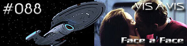
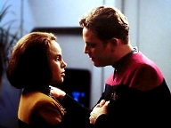
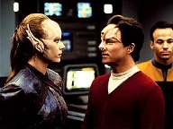
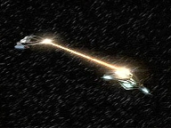
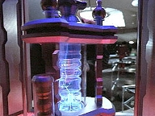

|
Voyager
Temporada 4

Anlise do episdio por
Daniel
Sasaki



| MANCHETE
DO EPISDIO Data Estelar: 51762.4  Uma nave aliengena que necessita de ajuda aparece de repente no caminho da Voyager. Seu piloto, Steth, tentava utilizar um sistema de propulso experimental energizado por um dispositivo de dobra coaxial. S que a tecnologia desestabilizou, colocando-o em perigo. Janeway o transporta a bordo junto com o prottipo. Paris, que andava entediado e irritadio, prope-se a ajudar nos reparos. O que ningum sabe que, na verdade, um aliengena havia tomado o corpo de Steth.Enquanto Paris usa seus conhecimentos para restaurar a nave, Steth acessa os computadores da Voyager e baixa informaes sobre o DNA do tenente. Assim que as reformas terminam, o aliengena troca de corpo com Paris. A nave parte e o impostor permanece na Voyager, vivendo normalmente a rotina do oficial. Quando o verdadeiro Paris acorda no corpo de Steth, surpreendido pelos Benthans, uma espcie que o vinha perseguindo h tempos. Das naves Benthans se transporta Daelen, uma mulher bastante irritada. Ela diz ser Steth e exige seu corpo de volta. Na Voyager, o aliengena deixa de convencer por causa do comportamento errtico. Ele briga com B'Elanna e Seven, e passa a beber em horrio de servio. Quando Janeway expressa suas preocupaes, ele a ataca. Tuvok chega a tempo e o leva para a Enfermaria. 
Que historinha fraca. O triste que a estrela da semana o rfo-de-longa-data Tom Paris. Quando finalmente decidem (tentar) desenvolv-lo, fracassam. A esta altura, seguro dizer: Paris o personagem mais desperdiado da srie. Curiosamente, no piloto, estava entre os mais promissores - mais at do que Chakotay. Quem no depositou expectativas naquele renegado mercenrio, que no era nem Frota, nem Maquis? "Vis Vis" reflete bem a mediocridade a que foi jogado o would be heri de Voyager. Ele consegue, agora, ficar menos interessante at do que Harry, que anda perdido de amores por Seven. Preocupante.  Mas vamos "coincidncia da semana" (TM), como alguns colegas do TB gostam de dizer. Incrivelmente, nosso grupo de perdidos encontra uma nave que, veja s, testa um novo sistema de propulso. De certa forma, o "distante" Quadrante Delta no parece to grande. A "dobra coaxial" um mero pretexto mascarado com um nome esquisito para a Voyager encontrar o pouco interessante aliengena Steth. Alis, um ser que passa seu tempo mudando de corpo com quem cruza seu caminho - apenas para se distrair com as novidades. O que nos leva pergunta. O que veio antes: o ovo ou a galinha? Steth se diverte porque muda de corpo ou muda de corpo para se divertir? Caracterstica evolutiva notvel.  Citaes: Paris - "I guess I should have known
this wouldn't interest you. It's too much fun." Chakotay - "Is there something
wrong, Tom? Anything bothering you?"
Ficha tcnica: Direo de
Jesus Salvador Trevino Elenco: Kate
Mulgrew como Kathryn Janeway Elenco
convidado: |